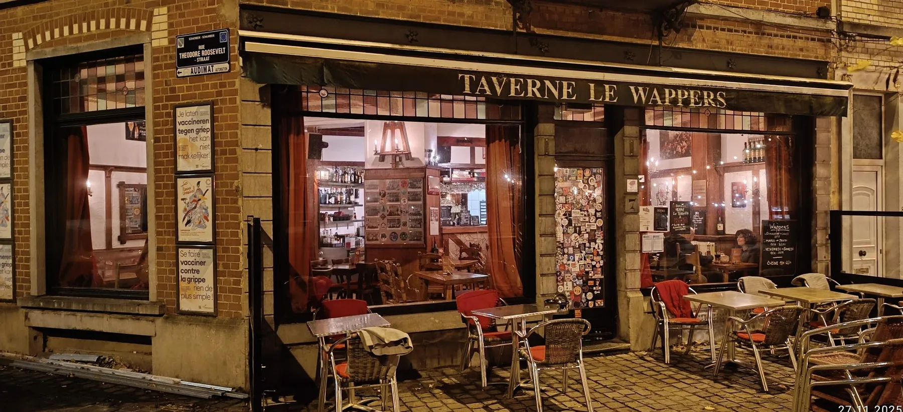
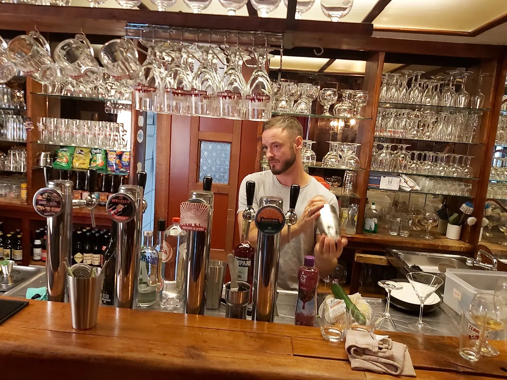
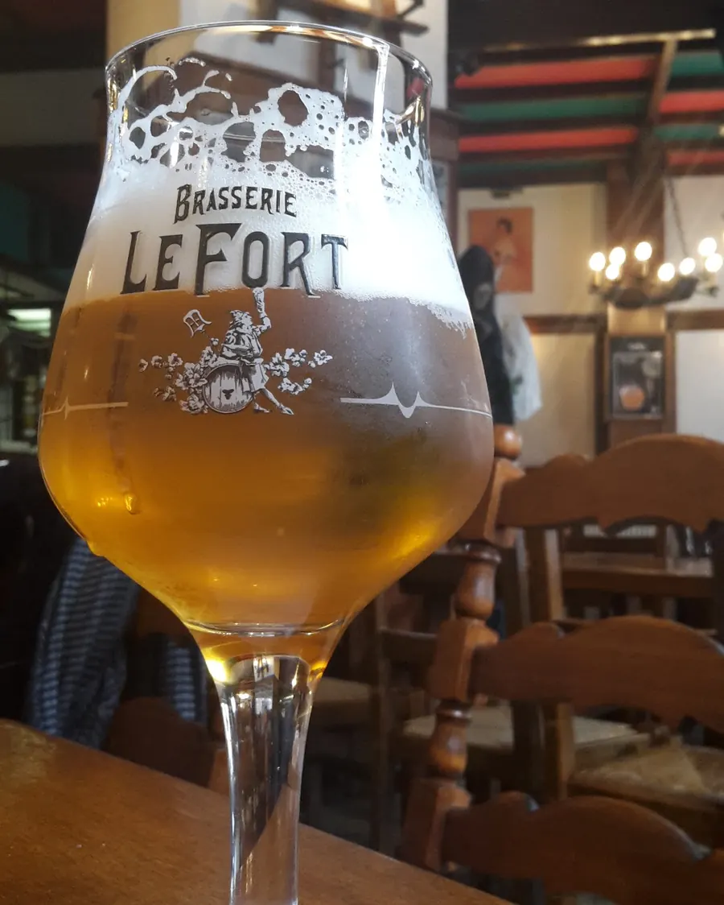
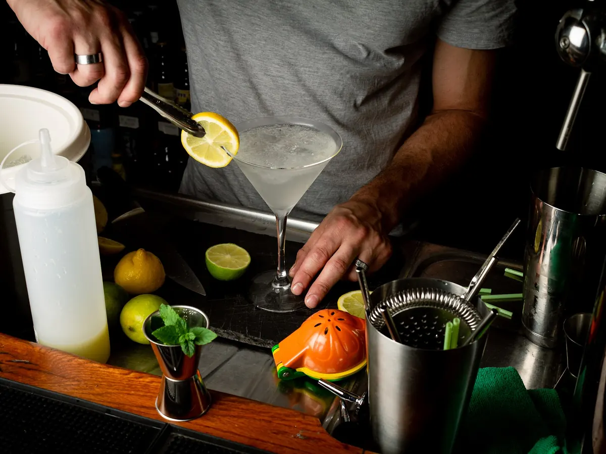
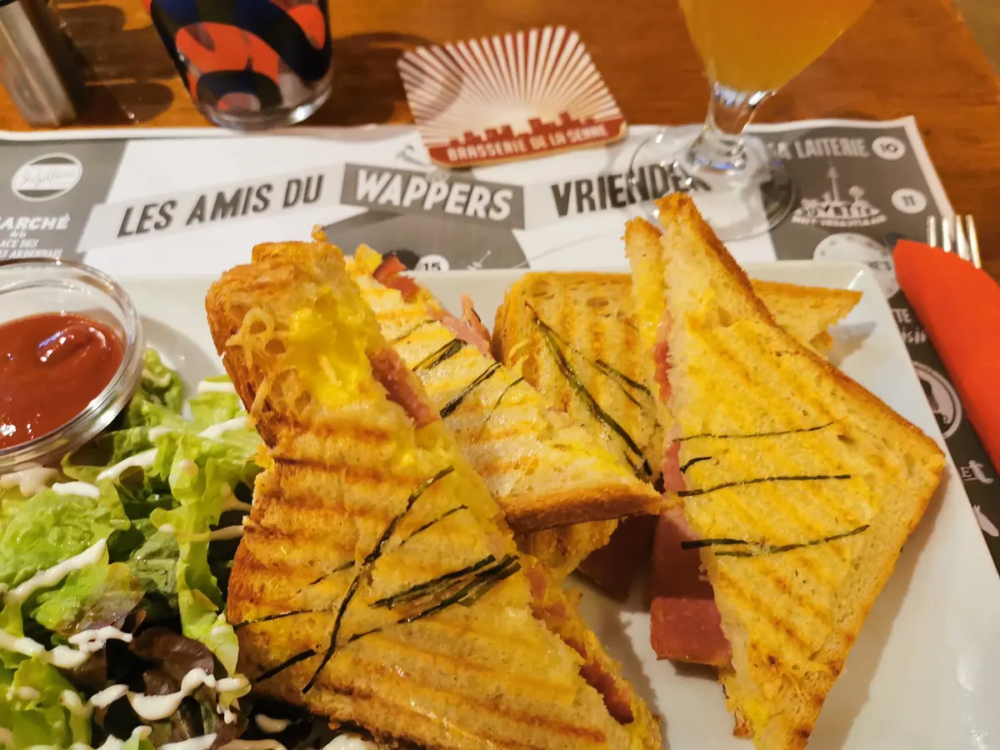
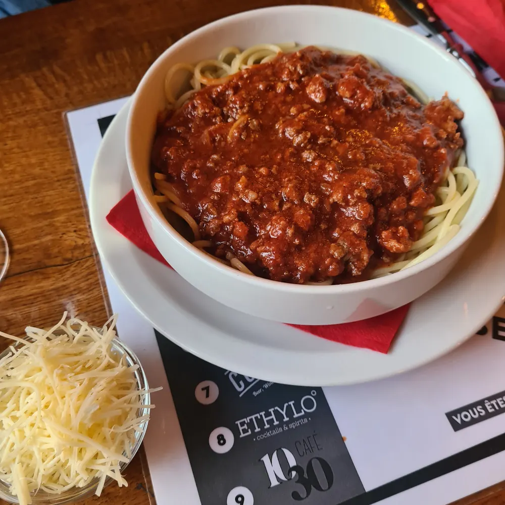
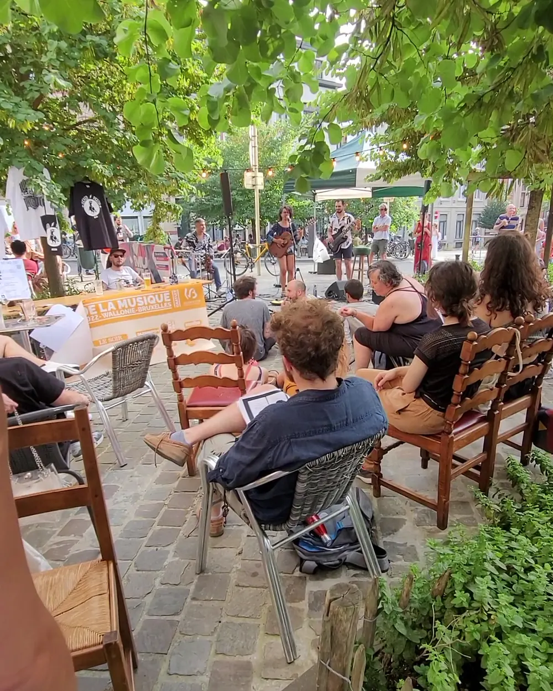
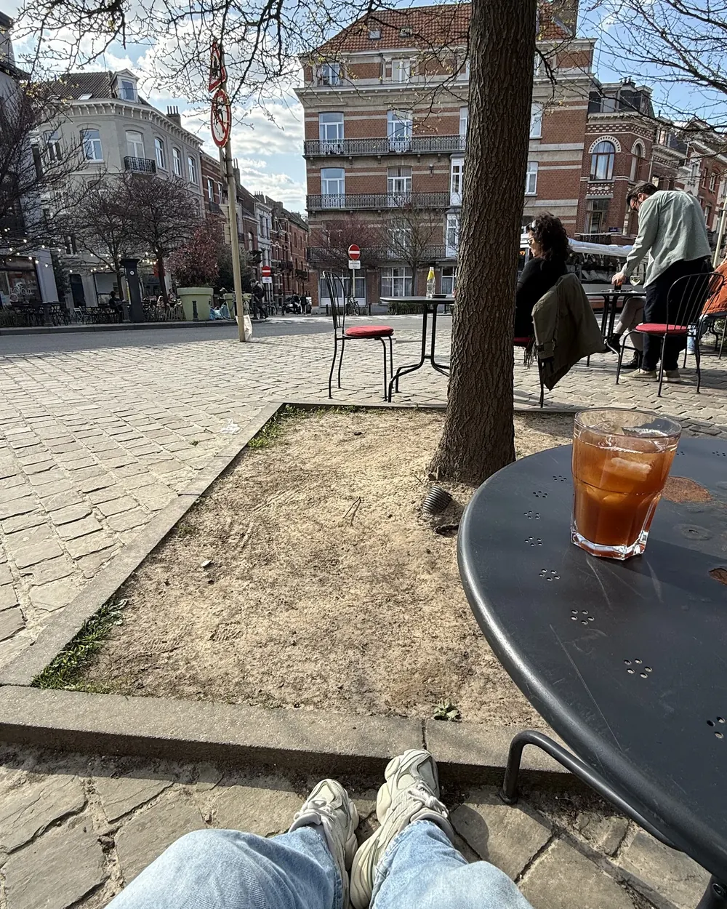
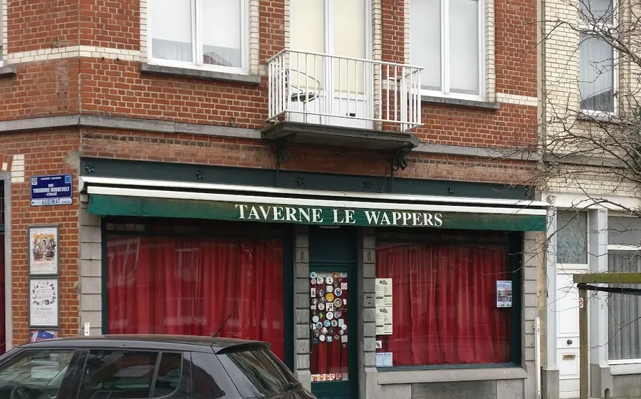

Taverne de quartier · Schaerbeek
Le Wappers
Les bières de la Brasserie de la Senne, des croques servis de 18 h à 22 h et une terrasse au soleil sur la place. Le bar où l'on passe après le boulot, entre colocs ou entre voisins.
Du mardi au samedi, de 16 h à minuit
Au comptoir
La Senne au comptoir, on boit belge.
Ici, les habitués parlent d'abord des bières : celles de la Brasserie de la Senne, la brasserie bruxelloise, avec la Jambe-de-Bois au fût. La maison s'en sert jusque dans son apéritif, Aperol ou Campari allongé de Jambe-de-Bois, et sert l'Esprit de Senne au digestif.
Les bières (notamment de la Brasserie de la Senne) sont de qualité et la restauration est copieuse.Nicolas M. · avis Google, 5 étoiles
la jambe de bois au fut est vraiment délicieuse ( mais à consommer avec modération 😂).Jonathan G. · avis Google, 5 étoiles

Le comptoir et ses tireuses
Une blonde au verre à pied
Au shakerGlissez pour voir les photos
Maitrankl'apéritif belge de saison
« […] vous êtes le seul bar de Bruxelles qui en sert et un bon en plus. […] »Sara L. · avis Google, 5 étoiles
À l'ardoise
Des croques de 18 h à 22 h.
« La restauration est copieuse », dit un habitué. Les croques tiennent l'ardoise, et le vendredi et le samedi, c'est rôtisserie.
- Croque Wappers12,50 €
- Croque végétarien12,50 €
- Croque du momentce jour-là : le Frenchy14 €
- Salade de la semainece jour-là : l'Iron Salad11 €
Vendredi et samedi : rôtisserie

Croque et salade, sur le set « Les amis du Wappers »
Spaghetti, fromage râpé à partGlissez pour voir les photos

La place en fête, un jour d'étéDehors
Le soleil en terrasse, sous les arbres de la place.
Les tables sortent sur les pavés de la place Wappers, à l'ombre des arbres. Le soir, les guirlandes s'allument au-dessus des vélos et des demis. La place porte le nom du peintre Gustave Wappers ; l'enseigne lui rend hommage, pinceau et palette en main.
« Le petit plus le soleil en terrasse en été 🌞 »Nicolas M. · avis Google

L'après-midiGlissez pour voir les photos
Réserver
Une table pour l'afterwork ou la bande.
Collègues, colocs, anniversaire : choisissez le jour, l'heure et le nombre. Le Wappers vous garde la table, en salle ou en terrasse.
Ils en parlent
Un vrai petit repère de quartier.
Les mots des clients, tels qu'ils les ont publiés sur Google.
Infos pratiques
Jusqu'à minuit, cinq soirs sur sept.
| lundi | Fermé |
|---|---|
| mardi | 16 h – minuit |
| mercredi | 16 h – minuit |
| jeudi | 16 h – minuit |
| vendredi | 16 h – minuit |
| samedi | 16 h – minuit |
| dimanche | Fermé |
Cuisine de 18 h à 22 h. Horaires de la fiche Google, relevés le 19 novembre 2026.

Les rideaux rouges, à l'angle
La taverne fait l'angle de la place et de la rue Théodore Roosevelt : vitrines aux rideaux rouges, enseigne dorée « Taverne Le Wappers ».